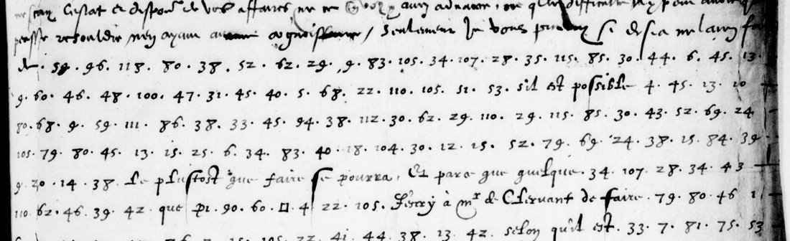

475.723.529.377.723.460.475.475.377 · LUNEVILLE du citron sur les quatre demi-pages blanches la monaca · vily dlya sena i navoza · ba be bi bo bu
A survey · September 2026
Twenty favourites from the archive
Five that made us laugh, five that matter to history, five that are simply ingenious and the five hardest breaks,
picked from more than six hundred cipher write-ups; the twenty run from about 1350 to 1933
Daniel Bourdeau · posted · updated
Why this page exists. Most of the work on this site is slow: a key rebuilt symbol by symbol, a catalogue record
corrected, a letter found to be in print since 1877. Six centuries of other people’s secret mail also hold royal scandals,
clerical blunders and some clever tricks. Here are twenty of them, five in each of four lists. Each card names how the text was
obtained and links to the full write-up, with the images, the key and the measured extent of the decipherment.
A drunk envoy, royal gossip, a cipher kept for insults, a minister who could not quite work his own code, and a state secret about garden forks.
1
Iorg Weinmaister · signed in cipher ·
1533Hungary → the Dukes of Bavariakey from adjacent plaintext
“To be spoken with in the morning, when he is sober”
the reading, in English
…one evening at Vienna well drunk, was sent to talk of the relief, and is to be spoken with in the morning when he is sober.
DECODE filed this letter under “Augurellio”, the name on its address leaf. At the foot of two leaves it is signed, in
cipher, Iorg Weinmaister: Jörg Weinmeister, a Bavarian agent in Hungary. The key was rebuilt from contemporary glosses on
sibling letters in the same volume and on this one. Most of the letter is grim news, including the siege of
the castle of Palota and a report of fifty thousand Turks marching from Belgrade on Buda. Then the talks on relieving Palota
run into a practical problem. The magnate Török Bálint was sent to discuss the relief one evening in Vienna while well
drunk, and will have to be approached again the next morning.
2Francia 283C f. 52: the figures, and the clerk’s decipherment beneath. Image: Archivio Apostolico Vaticano, Francia 283C f. 52, via DECODE R72.
1580Rome → the nuncio in Parisexisting decipherment
The Pope, the King of France, and the nun
Italian
La voce et l’opinione della pratica del Re Chr.mo con la monaca è uscita tanto publica che se ne ragiona hormai per tutto
The talk of the Most Christian King’s affair with the nun has become so public that it is discussed everywhere.
This is a cipher enclosure from the papal Secretariat of State to the nuncio Dandini, with the clerk’s decipherment written under
the figures. George Lasry decrypted its companion letter in 2020 with his reconstructed key. This one uses the same nomenclator with
different letter values, which were rebuilt here with a solver (simulated annealing) and checked against the clerk’s text. The two
agree word for word, except that the cipher has commercio where the clerk wrote concetto. What Rome wanted
kept secret was the gossip about Henri III and a nun. Whether or not it was true, the scandal was so great that the King “should stop
going to that monastery altogether”, and the nuncio is to press this on him hard. The companion letter adds that he is not to raise
the matter of the nun with the Queen.
3The insult, with the glosses above the numbers. Image: PAN Biblioteka Kórnicka, BK 1560, image 066, via the Wielkopolska Digital Library.
after 1688The Wallachian court → a “Most Reverend Father”existing decipherment
A cipher used for nothing but insults
Latin, cipher runs as glossed
impostor et Detractor ille et sine conscientia Burgundus Antidius Dunod
that impostor and detractor, the Burgundian without a conscience, Antide Dunod
The Szembek papers at Kórnik hold an “encrypted letter” catalogued as an 18th-century letter to the Szembek family.
It is the postscript of a letter from the Wallachian court, written after the death of Prince Şerban Cantacuzino in October 1688.
The Latin is in clear, and only single words are put into two-digit numbers. A second hand wrote the plain word above every run, and the
key rebuilt from those glosses (22 numbers, no conflicts) reproduces them. The words the writer chose to hide are mostly names and
insults. The imperial Jesuit envoy Antide Dunod, he says, led the late prince astray, and he gets five enciphered words to himself.
The postscript also reports that a certain Gegenbey was killed and his head sent as a gift.
No. 88, 25 June 1812, in figures. Image: National Archives and Records Administration, RG 59, M35 reel 3, frame 0206.
1812St Petersburg → Washingtonkey from adjacent plaintext
John Quincy Adams fumbles his own code: “impassioned” for “impaired”
English, syllable by syllable
if his ac-tive in-flu-ence had not been im-pas-ion-ed before it, it can scarcely fa-il to have been af-fect-ed
Despatch No. 88 of June 1812 reports that the Russian Chancellor Rumyantsev had suffered a stroke. Worthington Ford printed nine of its
lines in 1914 as “not decyphered”. Adams used his own code, not the one historians assumed. Its key was rebuilt here from the
State Department clerk’s interlinear decodes on the same microfilm reel and from Ford’s printed decipherments of other despatches,
and it decodes all nine lines. Four groups, whose values are certain, spell im-pas-sion-ed where the sense wants
“impaired”, most likely Adams’s own slip at the codebook.
The telegram as the American officials copied it, 1 June 1921. Image: NARA RG 59, 861.00, M316 roll 42, frame 1273, via the National Archives Catalog.
1921Moscow → Berlinciphertext-only break
A Soviet cipher telegram, intercepted and filed unread: forks for hay and manure
Russian, in the telegram’s Latin letters
vily dlya sena i navoza
forks for hay and manure
American officials copied this Soviet radio telegram at Constantinople in June 1921 and could not decipher it. It is
Russian in Latin letters, written in rows of 24 and sent column by column in a secret order. The order of the columns was recovered
here from the ciphertext alone, with no crib: a solver tries an order and scores the rows against a Russian language model. What Moscow
kept from the listening posts is a shopping list. Voikov tells Stomoniakov, at the trade delegation in Berlin, to buy hardware at once
for the goods-exchange fund with the countryside: tyre iron and horseshoe iron, wire nails from two and a half to seven inches,
shovels, rakes, axes, saws and chisels. The punctuation is spelled out, zpt for a comma. A few words in the saw and shovel
entries are still open.
Love verses passed between Mamluk secretaries in the fourteenth century, a king’s offer in 1413, a schism rumoured in 1527, a siege and the cession of Louisiana, each in cipher from someone who was there.
1F. 106v, the first two cipher lines: the red letters over the first five signs (at the right) were the way in. Image: University of Pennsylvania, Kislak Center, LJS 51, f. 106v, via OPenn (image 0084_0217).
c. 1350Ibn al-Qaysarani → the compilerkey from adjacent plaintext
Love verses in a Mamluk secretary’s cipher, about 1330–1370: the oldest key recovered on this site
Arabic
سهرتُ وأجفاني صِحاحٌ ولم أنمْ / ونامتْ ولم تسهدْ وأجفانُها مرضى
I lay awake, though my eyelids are sound, and did not sleep; she slept and was never wakeful, though her eyelids are sick.
A Mamluk secretary of the fourteenth century kept a book of the cipher verses he traded with colleagues: each message in an
alphabet invented for it, then “I unravelled it” and the verses. The book, now at the University of Pennsylvania, has lost
its end, and the last message, from Ibn al-Qaysarani, lost its solution with it. Seven lines, 89 signs of 22 kinds. Five small red
letters over the first word were the way in; the word for “eyelids” comes three times, and the ṭawīl metre and
the rhyme did the rest. Every sign now has a value: two verses about a drowsy-eyed girl and a lover who cannot sleep. The text is
dated by the project’s survey of the volume to about 1330–1370, the copy to the fifteenth century, so this is the oldest
text whose key was recovered here; the oldest recovered from the ciphertext alone is the Siena sheet of 1413, next.
2No. 12, the letter side. The crown-like sign is Re, the King. Image: Archivio di Stato di Siena, Concistoro 2308 fasc. 2 no. 12, via DECODE R4790 (image P2).
A royal bride for Sforza, 1413: the oldest key recovered from a ciphertext on this site, by George Lasry
Italian
El signore [Re] ve vole dare quale ve piace de quelle doe
The King will give you whichever of the two you like.
The Sienese archive keeps a fascicle of “Lettere in cifra” that DECODE catalogues under a placeholder date
of 1500–1599, with no status. Three of its sheets belong to the spring of 1413 and King Ladislaus of Naples. George Lasry
recovered their keys from the ciphertext alone in October 2026, working with his transcription tool CTTS and with Claude; no
decipherment and no filed key was available. They are the oldest ciphertexts on this site whose key was recovered that way. Of the older
texts here, those back to 1399 were deciphered in print long ago, and the Mamluk verses above were deciphered from a red gloss over their first word. The earliest sheet, of 10 March 1413, is wholly in a cipher of 46 invented
signs, the address on the back included, and a crown stands for the King. It tells the condottiere Sforza Attendolo that Ladislaus is
willing to make a marriage alliance with him and offers two girls of his house, a Malatesta and a Brancaleoni. Sforza may choose. That
letter is deciphered in part (87.7% of its words). The two sheets of March and April, under a second key
of 60 signs, are deciphered in full: a captain’s letter from Perugia, and the King’s orders to keep Paolo Orsini shut in
the Marche.
3f. 363r: clear Latin and signs with superscript digits. Image: British Library, Cotton MS Vespasian C IV f. 363r, via DECODE R8613.
1527Ghinucci → Cardinal Wolseykey from external plaintext
“To perpetual division”: the English break with Rome, seven years early
Latin
ut ecclesia Anglicana et Gallicana a Romana separetur … sed ad perpetuam divisionem
that the English and the French Church be separated from the Roman … but for a perpetual division
Girolamo Ghinucci, Bishop of Worcester, was Henry VIII’s envoy at Charles V’s court. His duplicate of 22 July 1527 is
noted in Letters and Papers as having no decipherment, and DECODE has it as not decrypted. The cipher is unusual: a sign
stands for a consonant and a small digit above it picks the syllable. Three of Ghinucci’s other letters in the same cipher were
deciphered by Wolsey’s clerks, and their decipherments survive in print or between the lines. Lining those up gave the key, and
797 of the letter’s 814 signs (97.9%) now give Latin. The Emperor’s men want to part Henry from Francis I, and the French
are said to have offered three millions for the King’s sons. The rumour at court is that Wolsey is going to France to cut the
English and French churches off from Rome, permanently. The Act of Supremacy came in 1534. (This background is not from the sources and was not checked here.)
5The letter of 18 March 1801: the coded paragraph, then clear news of prize cases and Malaga. Image: National Archives (NARA), RG 59, Despatches from US Consuls in Paris, microfilm T1 roll 1, frame 0097, via the National Archives Catalog.
1801Paris → the Secretary of Stateciphertext-only break
“The Mississippi, with all its Dependencies”: the cession of Louisiana, in a code printed as “key not found”
English
Spain has ceded to France, not Florida, but the Mississippi, with all its Dependencies
James Cole Mountflorence, an American consular agent in Paris, wrote to the Secretary of State on 18 March 1801 with two
sentences in code. The Madison Papers print the numbers as they stand: “Partly in code; key not found.” The minister at
Madrid could not decode a message from Mountflorence either, with the key the department had sent him. It is a one-part code of about
600 numbers in alphabetical order, and names are spelled letter by letter. Two of the spelled names have telling patterns: nine groups
that repeat as ABCDBEAAD give LUNEVILLE, and five as ABCDB give PARMA. TUSCANY and DUPONT follow from the shared letters, and because
the numbers rise with the alphabet, each word group can be placed between its neighbours. All 39 groups decode, and the microfilm
confirmed a figure the decipherment had predicted. The news, on the authority of one Dupont, is that Spain has ceded Louisiana to
France in compensation for Tuscany. Four words, Mississippi among them, rest on their place in the alphabet and the sense.
Ciphers used cleverly, or for something unexpected: lemon juice, counted letters, a father’s log, a challenge and a book of charms.
1KHA, Prins Willem V inv. 205. Image: Koninklijk Huisarchief, The Hague, Prins Willem V inv. 205, via DECODE R1057 (rotated here).
1792Berlin → The Hagueknown key applied
A cipher whose only job is to say that the real letter is in lemon juice
French
il y a du citron sur les quatre demi-pages blanches de l’incluse
there is lemon juice on the four blank half-pages of the enclosure
The Dutch envoy van Reede wrote from Berlin on 4 February 1792. Deciphered in full with the 1782 Grand Chiffre, the key of his
earlier letters to the Prince, the letter is a cover note. The four blank half-pages of its enclosure carry writing in lemon juice, the Prince of Orange is to be told, and “the following
figures are nulls”. Those 21 nulls decode to a planted jumble of Conseil d’Etat, la Russie and
Archiduc, which is bait for anyone who opens the letter.
2One of the bars. Image: Kevin McCurley, “Cryptograms on Gold bars from China”, IACR (1996), iacr.org/misc/china.
1933Shanghaino message
$300,000,000 in gold bars, and almost exactly ten of every letter
the test
χ² = 1.25 on 25 degrees of freedom, where chance predicts 25
Seven gold bars, said to have been issued in Shanghai in 1933 to certify a deposit of over $300,000,000, carry sixteen strings of Latin
letters. For ninety years nobody found a message in them. Their letter counts are the problem: against a flat distribution they give a chi-squared of 1.25,
where honest random sampling gives about 25. No cipher can produce that. Substitution and transposition keep the skew of the plaintext, and
a one-time pad lands near 25. Someone counted out the letters and arranged them to look like cryptography.
Harley MS 286 f. 61. Image: British Library, Harley MS 286 f. 61, via DECODE R7759.
1635–36Suffolk, a private recordciphertext-only break
A father’s secret log of his baby son’s fits
Latin
in quorum tertia os ipsius pene ad aurem dextram convulsum, quod ante numquam observavi
in the third of which his mouth was drawn almost to his right ear, which I had never seen before
DECODE has this as a letter of 1635, “unknown sender to unknown recipient”. It is Sir Simonds D’Ewes, the antiquary,
writing Latin in a private alphabet he invented at school. The page is a log, one line per convulsion, of his infant son Clopton from
3 April 1635, with the day, the hour and the phase of the moon. No plaintext of the slip exists, and no decipherment was found. The
alphabet was recovered from the ciphertext alone, starting from probable words such as convulsio and plena luna, and
96.5% of the words are deciphered. The weekdays checked (3 April, 23 April, 23 May) match the calendar. Of the moon phases checked, four match (23 April, 19 July, 2 August, 18 August) and two do not (25 May and 12 June, taken to be D’Ewes’s own slips or loose wording). Clopton died on 9 May 1636.
P M V E B D W X Z A a p e r s o n c a n · key: F O R T I F I C A T ·
1915Manila → Fort Leavenworthciphertext-only break · partial
An Army challenge cipher whose sealed answers were lost, and a key taken from the Engineer Field Manual
English
A person can only be considered a spy when acting clandestinely
First Lieutenant J. O. Mauborgne sent 499 letters from Manila to the Army Signal School in October 1915 as a
challenge, with the plaintext and the method in two sealed envelopes to be opened months later. Neither envelope is known, and no
record of a submitted solution has been found. Louis Kruh printed the cipher in 1993 from a sheet that has since been lost. In November
2026 Jacob Houtrouw, working with an AI model, reported the system. It is a running key in which each key letter sets an odd shift, so
that every cipher letter has the opposite alphabet parity to its plaintext letter. The key text is the opening of Part V of the
Engineer Field Manual, and the plaintext is Article 29 of the Hague regulations of 1907, on who is to be considered a spy. Checked here
with a second decoder, the rule reproduces 489 of the 499 letters. The ten that disagree are not explained, and the order of events
rests on the contributor’s record.
The first page of the text: a cipher heading, the clear heading “At Dölge Blod” (to stanch blood) and the first charm. Image: Det Kgl. Bibliotek, Dansk Folkemindesamling, DFS 1997/020, image 003 right, via KB Digitale samlinger.
c. 1858Funen, Denmarkciphertext-only break · partial
A cunning man’s book of charms, in an alphabet he made for himself as a boy
Danish
Gud sætter sin Stav for Flod, han stiller Vand, men jeg stiller Blod
God sets his staff before the flood; he stills water, but I still blood.
Søren Christensen (1843–1925), “Kloge Søren”, was a cunning man of Funen. He began his
Cyprianus, a handbook of charms and cures, in 1858, and wrote almost all of it in a cipher of his own, in red ink, under headings in
clear Danish. It is a simple substitution in chevrons, dotted bars, hooks, a cross and an arch, with the spaces between words kept.
Brice Dudout recovered the key from the cipher text, starting from guessed closing formulas and a blind solver run, then froze it and
measured it once on held-out pages. The writer’s own table of the alphabet, at the back of the volume, gives the same values. The
book holds about a hundred charms and recipes: to stanch blood, against colic and fever, to protect cattle and butter from witchcraft,
to bind a gun, and many against thieves. Twelve of its 148 pages were checked word by word here, and the rest carry the
contributor’s reading only. Ferdinand Ohrt deciphered the book before, unpublished.
Chosen for difficulty alone. In each the key was recovered here from the ciphertext, with no key, no decipherment and no sibling to lean on, and the cipher was transcribed from the images.
1

f. 233, October 1585: clear French running into the figures. Image: Bibliothèque nationale de France, Cinq cents de Colbert 401 f. 233, via Gallica.
1585–86Henry of Navarre → Ségurciphertext-only break
Henry of Navarre raises a German army, in a table found by counting in fives
French
capituler et conclure promptement avec ceux que vous adviserez, s’il est possible avec le duc Casimir
come to terms and conclude promptly with whomever you think best, with Duke Casimir if possible
Three letters in figures to Ségur, the envoy raising a German army, were listed as letters of Henry III. Their 461 figures were
transcribed from the Gallica images. Taken modulo 5, the higher numbers all fall in one slot of every five. That is the trace of an
alphabetical syllable table, ba be bi bo bu, ca ce ci co cu. A solver built on that structure, with the letters’ clear French as
context, converged on a key whose letter part came out in alphabetical order by itself. It scored 97% on a matched control. The letters are signed
Henry at Montauban and are Henry of Navarre’s. Lasry wrote that he broke them independently in 2024; his solution is unpublished.
even figures 10–78 “in meiner Statt Bonn” · signed Ferdinand ·
1619Bonn → Munichciphertext-only break
Ten pages of figures with no sender, no recipient and no language, and the letter names itself
German
sich vor des andern Theils Einfal, Gwalt und Betrangnus zu entweren
to defend themselves against the other side’s incursion, violence and oppression
DECODE knew only the year of this record: no author, no recipient, no place, no language. The cipher is a homophonic substitution on the even
numbers 10 to 78, with two word-end signs and a three-digit nomenclator. Its key was recovered by annealing 2,482 letters against a
16th-century German model, with about sixty single-digit transcription slips repaired. The same key reads the sibling letter in the file unchanged.
The decipherment then names the writer: Ferdinand of Bavaria, Elector of Cologne, to his brother Duke Maximilian, six weeks after the Winter
King’s coronation, on quartering and paying the Catholic League’s troops. Neither letter was found in print.
f. 152r: the date, the only clear words, and the first lines of cipher. Image: Bibliothèque nationale de France, fr. 3157 f. 152r, via Gallica btv1b90598645 view 153.
1560the Agenais → the connétable de Montmorencyciphertext-only break
Ten pages of an invented cursive script, and the clue in a pair of strokes
French
Despuis les derniers advertissemens que envoiay a vostre grandeur, les affaires de pardeça ont couru de mal en pis
Since the last reports I sent to your greatness, affairs here have gone from bad to worse
The only clear words on these ten pages are the date, 12 December 1560. Everything else is a cursive pseudo-script, 1,715 words with no
gloss, no key and no edition. The first solver, one sign to one letter, produced gibberish. The way in was a statistic: one sign was followed by
the same second sign in 262 of 283 cases, so the pair had to be a single unit. Fitting the commonest word to que broke it open. A
re-check against the images then found that about 300 signs first read as one letter were a smaller look-alike for another. The mémoire
describes the Protestant rising in Guyenne in the first days of Catherine de’ Medici’s regency. George Lasry wrote that he had
broken it independently in 2023; his solution has not been published.
Thirty-seven lines of invented signs from 1428, and a boy too young to marry
Latin
et quod Carolus est nimis iuvenis ad talia
and that Carlo is too young for such things
DECODE catalogues R1854 as one letter of unknown sender and recipient. It is four letters to Gianfrancesco Gonzaga,
lord of Mantua, each in a different cipher. This one is dated in clear at Rome on 9 August 1428, and all 37 of its lines are in
cipher: about forty letter signs, some of them digits, a dozen nulls, signs for con, et and -rum, and two
word codes. The Gonzaga chancery’s own register of ciphers survives, and none of its keys gives sense here. A solver (simulated
annealing on a Latin language model) recovered the key from the ciphertext alone, and every sign was then checked on the image: 1,757
of 1,802 signs are deciphered. The letter is about a marriage. A countess agrees to her daughter’s match with a Gonzaga son,
but her subjects object that Mantua is too far away. The bridegroom under discussion, Gianfrancesco’s son Carlo, was then
eleven.
Clear text and the first cipher lines of c. 10r. Image: Biblioteca Estense Universitaria, Modena, Autografoteca Campori, Lettera L, Lope de Soria, c. 10r, via the Lodovico Media Library (CC BY-NC-SA).
1527Genoa → the viceroy of Naplesciphertext-only break
Letter signs under a three-letter code, eight weeks before the Sack of Rome
Spanish
siendo aqui quinze galeras iuntas sin duda romperian las de Francia
with fifteen galleys together here, they would without doubt break those of France
Lope de Soria, Charles V’s ambassador in Genoa, wrote to Charles de Lannoy, viceroy of Naples, on 7 March 1527.
About a hundred of his lines are in cipher, with no decipherment on the leaves; the Biblioteca Estense catalogues the letter as partly
enciphered, and it is not on DECODE. The cipher has two layers: about fifty single signs for letters, a few of them standing for two
values, and 61 three-letter code groups in Latin letters (dri is que, fip is galeras), used for
words and for syllables too. A simulated-annealing solver, first tested on a control text enciphered the same way, found the letter
signs from the ciphertext alone, and its top runs agree on every sign. The code groups were then valued from the deciphered context,
and 95.5% of the cipher tokens are deciphered. Genoa will arm galleys if the Emperor pays half, and wants the six imperial galleys at
Naples to join its nine. Fourteen rare code groups are still open.
The twenty come from the more than six hundred write-ups on this site and the notes behind them. The first fifteen were chosen for
the story, and difficulty played no part; the full list sorts by outcome, and the repository’s
solved ranking scores every finished
target. Each badge names how the text was obtained, in the terms of the site’s glossary. Ciphertext-only break (eleven
of the twenty), key from adjacent plaintext (four: Ibn al-Qaysarani about 1350, Weinmeister 1533, Toledo 1565 and Adams 1812) and key from external
plaintext (one: Ghinucci 1527, matched against decipherments printed or interlined elsewhere) mean the key was rebuilt.
Known key applied (one: Van Reede 1792) and existing decipherment (two: Dandini 1580 and the Szembek postscript) mean
that a key or a decipherment already existed, and the work was transcription and decipherment. Partial means some of the text
is still open. One of the twenty, the gold bars of 1933, holds no message at all. Quotations keep the original spelling, and the
translations follow the write-ups.
Three of the keys were recovered by others, and their cards say so: George Lasry’s for the Siena sheets of 1413, with CTTS and
Claude; Brice Dudout’s for Kloge Søren’s book; and Jacob Houtrouw’s for Mauborgne’s challenge, which
rests on his record and was checked here with a second decoder.
The five hardest breaks were chosen the other way round, by difficulty alone. The tests: the key recovered here from the ciphertext
alone, with no earlier decipherment of the text and no sibling key; an unknown system; the cipher transcribed from the images here; and
a control, a sibling letter or a re-check on the images behind the key. Two of the five, the Ségur letters and the Mémoire
of 1560, had been solved privately by George Lasry, who never published them; the cards say so.
The page had thirty favourites and six hardest breaks until 14 November 2026, when it was cut to five a list and eight cards gave
way to finds made since October: the Siena sheets, Mountflorence, Burr, Voikov, Mauborgne, Kloge Søren, the Gonzaga letter of
1428 and Soria to Lannoy. On 16 November 2026 Burr’s card gave way to Ibn al-Qaysarani’s verses of about 1350, the
oldest text whose key was recovered here; Burr’s letter is still on the home page. The cards that left are still in the full list.
Every image is credited on its card to the archive or edition that holds it. Select an image to open it full size.
06 Sources
The write-ups linked from each card, with their working notes in the repository, one folder per target.
The DECODE database (Megyesi et al.), where many of the records live, and George Lasry’s report of 17 October 2026 on the cipher documents of Concistoro 2308 at Siena.
The printed sources named on each write-up, among them the Papers of James Madison and Louis Kruh’s printing of the Mauborgne challenge (1993).
Cite this page
Daniel Bourdeau, “Twenty favourites from the archive”, Cyphersolver, posted 22 September 2026, updated 16 November 2026, repository commit d423dd2ccb, https://cyphersolver.com/highlights.html.